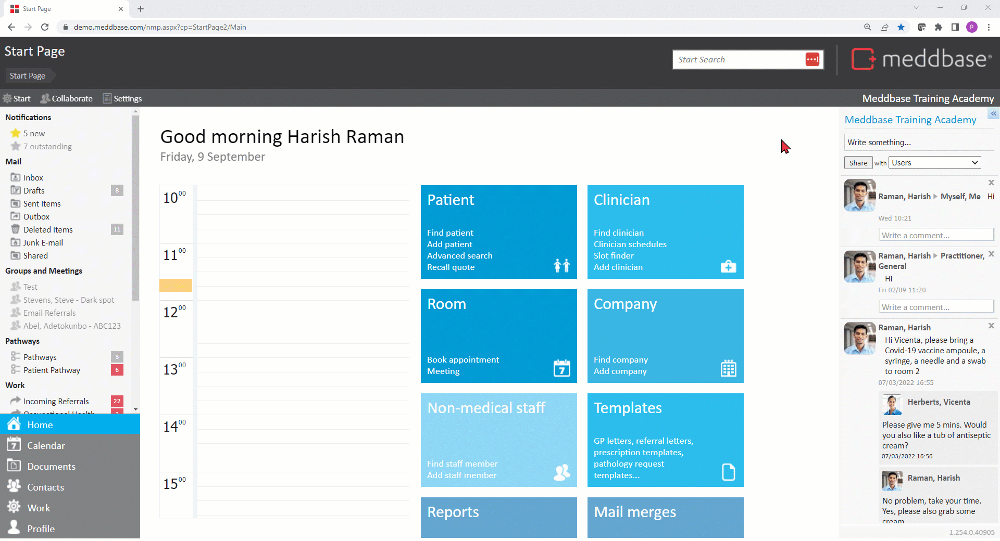

Whenever multiple Procedures are consumed during or outside of an appointment in Meddbase, you can apply automatic discounts on Procedure bundles.
This article outlines:
Service Types in Meddbase are configured in Admin > Service Management. There are different types of services you can configure, e.g. Tests, Products, Vaccines etc. The billing rule described in this article only applies to the Procedure service type.
There are configuration activity that needs to take place before this rule can be used effectively, and these are:
*The above configuration pre-requisites are based on the assumption that you intend to charge patients' preferred payers for consuming Procedures. If the intention is for Procedures to be offered free of charge, this rule is obsolete.
To configure the Multiple Procedure Rule:
1. From the Start Page navigate to Admin > Billing Rules.
2. Expand the company icon where you wish to store the rule* and click +Add rule.
*You can configure any billing rule (except Charge Band) under any given entity's icon, and that entity will not own the rule. This means you can configure 1 rule, e.g. under your chamber company, and add it to multiple Charge Bands irrespective of which entity a given Charge Band belongs to, saving you the trouble of creating the same rule multiple times.
3. Select Multiple Procedure Rule.
4. Name the rule accordingly.
Adding a Folder name / in front of the rule name will create a folder (if it doesn't exist already) and move the rule to that folder
5. Select the Rule for Multiple Procedure discount from the dropdown menu.

Discounts for patients receiving multiple procedures can be calculated in one of two ways:
Highest value
When the 'Highest Value Service Percentage' rule is selected in the Multiple Procedure Rule Details dialog, the amount charged on the invoice will be based purely on the highest priced (the most expensive) Procedure out of the many booked, with a percentage supplement applied.
The supplement is decided by the number of Procedures on the invoice. If one Procedure is invoiced, it will be charged in full with a 0% supplement.
If two Procedures are invoiced, the supplement will increase according to the setup. If three or more Procedures are invoiced the supplement will increase once more.
Let's use an example of a 10% supplement when 2 Procedures are booked and a 20% supplement when three or more Procedures booked.
| Procedures booked | Total Amount Invoiced | Calculation |
| Procedure 1 - £1000 | £1000 | £1000 invoiced for Procedure 1 (highest value Procedure charged at 100%) |
Procedure 1 - £1000 + Procedure 2 - £500 | £1100 | £1000 invoiced for Procedure 1 (highest value Procedure charged at 100%) + 10% Supplement on £1000 (Two Procedures booked) |
Procedure 1 - £1000 + Procedure 2 - £500 + Procedure 3 - £10 | £1200 | £1000 invoiced for Procedure 1 (highest value Procedure charged at 100%) + 20% Supplement on £1000 (Three or More Procedures booked) |
Procedure 1 - £1000 + Procedure 2 - £500 + Procedure 3 - £10 + Procedure 4 - £5 | £1200 | £1000 invoiced for Procedure 1 (highest value Procedure charged at 100%) + 20% Supplement on £1000 (Three or More Procedures booked) |
Service Price %
When the Service Price % is selected, the total cost of multiple procedures is calculated based on Service Price % for each service.
The highest value Procedure (the most expensive) will be charged at 100%.
The 2nd highest value Procedure will be charged at a reduced percentage, as per the setup, then all lower value Procedures will be charged at a further reduced rate.
It does not matter in which order you select the Procedures, as the system takes the hierarchy of prices (from highest) into account not the order of selection.
Let's use an example of 80% charged for the 2nd most expensive Procedure booked and 50% for further less expensive Procedures booked. Let's use the Procedures from the previous example again here:
Procedures booked and their individual prices | Total Amount Invoiced | Calculation |
Procedure 1 - £1000 | £1000 | £1000 invoiced for Procedure 1 (highest value Procedure charged at 100%) |
Procedure 1 - £1000 (highest value) + Procedure 2 - £500 (2nd highest value) | £1400 | £1000 invoiced for Procedure 1 (highest value Procedure charged at 100%) + £400 invoiced for Procedure 2 (80% charged for the 2nd most expensive Procedure) |
Procedure 1 - £1000 (highest value) + Procedure 2 - £500 (2nd highest value) + Procedure 3 - £10 (further, less expensive Procedure) | £1405 | £1000 invoiced for Procedure 1 (highest value Procedure charged at 100%) + £400 invoiced for Procedure 2 (80% charged for the 2nd most expensive Procedure) + £5 invoiced for Procedure 3 (50% charged for further Procedures, less expensive than the highest value and the 2nd highest value Procedures) |
Procedure 1 - £1000 (highest value) + Procedure 2 - £500 (2nd highest value) + Procedure 3 - £10 (further, less expensive Procedure) + Procedure 4 - £5 (further, less expensive Procedure) | £1407,5 |
£1000 invoiced for Procedure 1 (highest value Procedure charged at 100%) + £400 invoiced for Procedure 2 (80% charged for the 2nd most expensive Procedure) + £5 invoiced for Procedure 3 (50% charged for further Procedures, less expensive than the highest value and the 2nd highest value Procedures) + £2.5 invoiced for Procedure 4 (50% charged for further Procedures, less expensive than the highest value and the 2nd highest value Procedures) |
As with any billing rule, the Multiple Procedure Rule must be added to relevant Charge Band(s) to perform the desired action and apply discounts on Procedure bundles.
To add the rule to a relevant Charge Band:
1. From the Start Page navigate to Admin > Billing Rules.
2. Expand the icon of the entity (company) to which you wish to apply the rule. If the relevant entity is not visible, you can add it to the view via the Add Companies field.
3. Click on the relevant Charge Band(s) you wish to apply the rule on.
Every entity (company) can have as many Charge Bands configured as needed, e.g. an Employer having multiple Charge Bands for different groups of employees or an Insurer having multiple Charge Bands for different insurance tiers.
4. in the Charge Band Rules section click +Add rule.
5. In the Add Rules To Set dialog window, expand the entity where you created/stored the rule.
6. Click the rule and it will be added to the Charge Band.